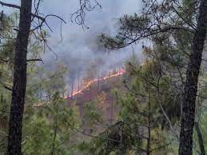
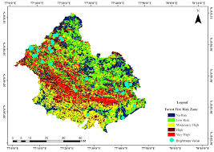
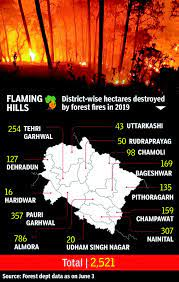

'The Increasing Forest Fires in Uttarakhand'
Climate crisis, human activities, and a poor response mechanism have deepened the crisis. Uttarakhand is a warning of the challenges that lie ahead in preserving India's fragile natural ecosystems. Uttarakhand is battling by forest fire every year , and its continuation getting worse. According to the state forest department, there have been 989 fire incidents between October 1, 2020 and April 4, 2021, destroying around 1,297.43 hectares of rich, biodiverse forests.
The following demographs demonstrates the Forest Fires in Uttarakhand:

Forest Fires in 2016 Uttarakhand
 Forest fires are not unusual in Uttarakhand, or, for that matter, in any jungle. In Uttarakhand, it usually begins in mid-February, when the trees shed dry leaves and the soil loses moisture due to a rise in temperature, and continues till mid-June. But this year, the situation has been different because of two reasons. One, the lack of adequate rainfall in the winter, leading to dry soil, and, second, the higher-than-expected temperature in March and April, both indicating the impact of the climate crisis. The change in the weather pattern, however, is not always the only reason for forest fires. They are also caused when locals clear land, or by farming-related activities, or sometimes sheer carelessness. A Forest Survey of India study states that over 95% of fire incidents are of anthropogenic origin.Uttarakhand has around 38,000 square km of forests, which is almost 71 per cent of its geographical area. Since its formation as a separate state in the year 2000, forest fires have affected over 48,000 hectares. According to experts, three factors cause spread of forest fire were fuel load, oxygen and temperature. Dry leaves are fuel for forest fires and its quantity this time is more than past years.
According to an official, due to lockdown there was very less human movement and field activity in the forest fire season like every year when inflammable leaves and woods are collected in forest areas near human habitats. Dry leaves shed from trees in spring remained at the ground and the fuel load increased due to the same natural phenomenon in the year. Following less rain in monsoon and almost nil rain in winters dried the soil and earth surface lost the moisture early this time. Atmospheric temperature in March and April is also soaring in comparison to previous year. Strong wind velocity is spreading fire very fast in jungles This year, however, forest fires have started from April first week. More than 1100 incidents of forest fire have so far occurred in the current fire season, which started in October, 2020. with almost 50 per cent in March and April first week only
Original Credits: Article from Indian Expresss and Hindustan Times Dated : April 9, 2021
 by Ananay Gupta © All Rights Reserved 2021
by Ananay Gupta © All Rights Reserved 2021